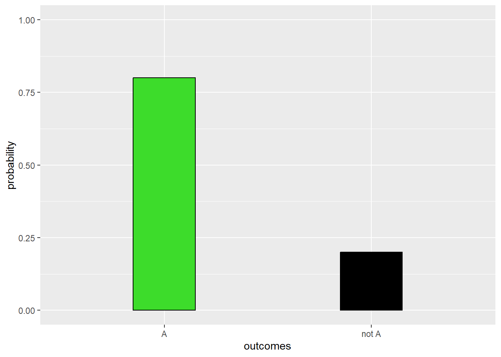
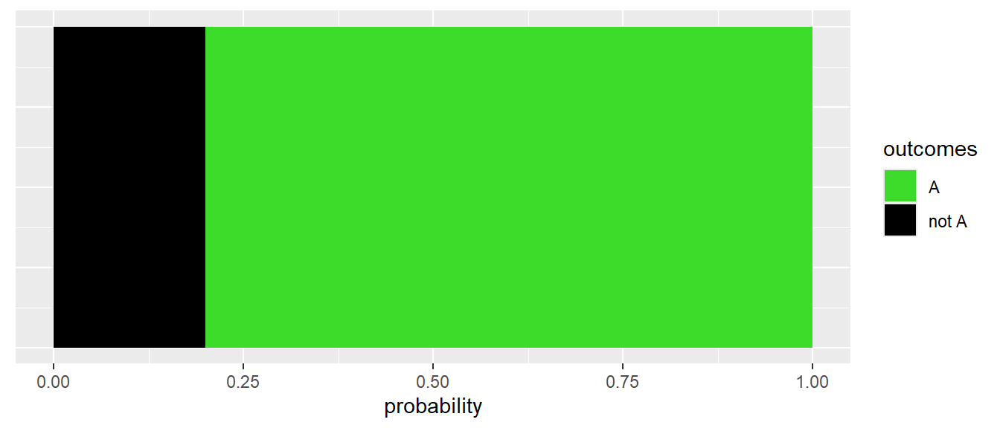
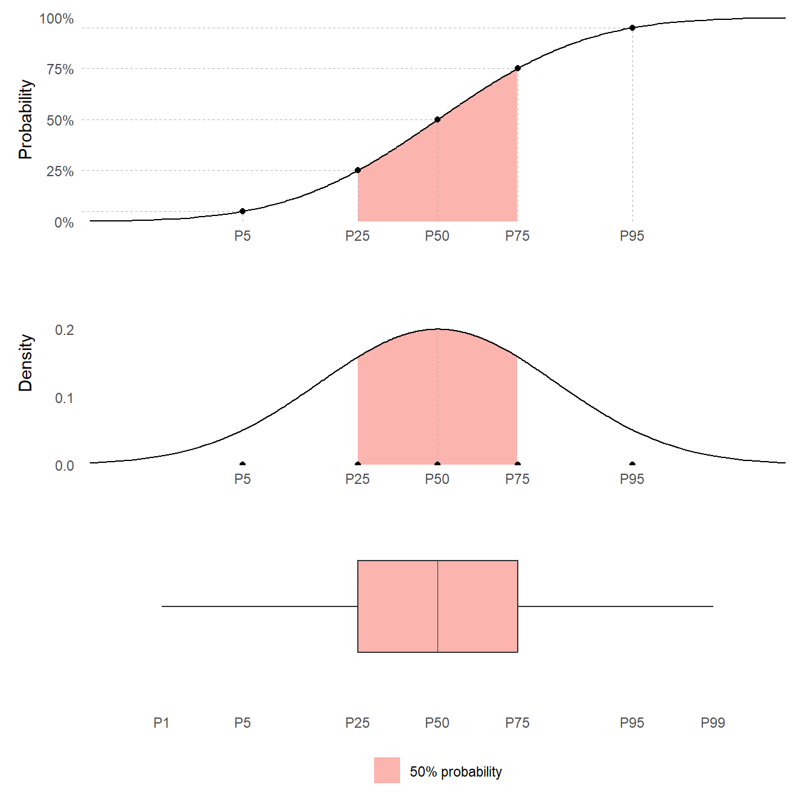
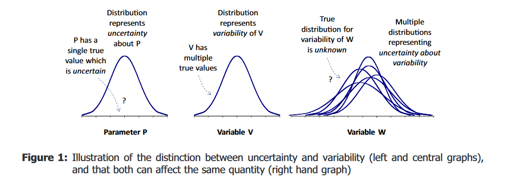

Introduction to probability distributions
MVEN10 Risk Assessment in Environment and Public Health
Background
Expert judgement are common in risk assessment. To ensure rigour of the assessment, these judgements should be collected in a structured way. Methods have been developed to reduce linguistic uncertainty and cognitive biases when experts make judgements, and to aggregate judgements by a group of experts.
Quantitative judgements, e.g. judgements expressed by subjective probabilities are preferable over qualitative expressions of uncertainty. The reasons are that
- qualitative judgements have different meanings for different people, and
- quantitative judgements can be combined using probability rules (probability calculations)
EFSA defines Expert Knowledge Elicitation as
A systematic, documented and reviewable process to retrieve expert judgements from a group of experts, often in the form of a probability distribution.
In general, it is possible to make a quantitative judgement when the question asked to an expert is well-defined.
The expert should also feel that she has some basis to make his/her judgement.
A good expert makes judgements where she has domain knowledge and is hesitant to make judgements for questions where she feels there is not enough basis for a judgement.
It is also important that experts receive training in making probabilistic judgements to ensure they understand them.
Content
This mini-lecture introduces probability distributions for a binary event, a categorical quantity, a discrete quantity and a continuous quantity. The terms cumulative probability function, probability density function, and quantile and boxplot. The aim of the lecture is to that the student understand the terms quantile and percentile.
References
Probability distributions
A binary event
The simplest probability distribution is the probability for a binary event, which is an event having only two outcomes.
Let us say that we have the events A and not A.
If the probability for A is \(p\), then the probability for not A is \(1-p\).
We can illustrate the probability distribution for a binary event as a bar chart
Another useful way is to think of binary events as sections taking up a certain area of the probability scale

More than two possible outcomes
Probability is also used for quantities having “more than two possible outcomes”.
This can be quantities that are
categorical - with distinct classes that do not have to come in a particular order
discrete - taking numerical integer values, usually obtained by counts
continuous - taking numerical continuous values for which probability is expressed over ranges instead of specific numbers
The probabilities for quantities taking different values are summarised by a probability distribution.
There are different types of probability distributions depending on the characteristic of the outcome space, i.e. the full set of possible outcomes.
| Type of outcome | Description of outcomes | Examples outcome space | Examples distributions |
|---|---|---|---|
| Binary | two outcomes | 0 or 1 | Bernoulli |
| A or not A | |||
| TRUE or FALSE | |||
| Categorical | two or more categories | Adult, Adolescent, Other children | |
| Discrete | whole numbers | 0, 1, 2, 3, … | Poisson |
| 0, 1, 2, …, n-1, n | Binomial | ||
| the number of trials that falls into two or more categories | Multinomial | ||
| Continuous | real numbers \(x \in \mathbb{R}\) | \(-\inf < x < \inf\) | Normal |
| \(0<x\) | Exponential | ||
| \(0 < x < 1\) | Uniform, Beta |
Footnote: The \(x\) in the table above is a notation for a random observation from the probability distribution.
Visualising probability distributions
A probability distribution for a continuous quantity can be plotted in various formats:
A Box plot
A Probability Density Function (PDF)
A Cumulative Probability Distribution (CDF)
Here they are plotted together to show how they are related

Quantiles
To summarise uncertainty, an assessor might want to find values that divide the range of the quantity into parts containing specified amounts of probability. Such values are known as quantiles.
A quantile can be denoted with the letter P, together with the associated probability that the quantity would take a value below the quantile. For example, the value that divides a probability distribution into two parts with equal probabilities is the P50 quantile.
This value is also known as the median.
Quartiles divide a probability distribution into four sections of equal probability. The first quartile is P25. The second quartile is the median P50. The third quartile is P75.
A boxplot visualises quartiles.
A percentile is another name for a quantile defined by the probability to the left of the quantile.
Probability Density Function
Most continuous quantities have a Probability Density Function (PDF).
The Probability Density Function express probabilities as area under its curve. The total area under the curve is 1, corresponding to 100% probability.
The area under the PDF curve to the left of the median is 50%.
The PDF can be thought of as a smooth histogram for a continuous quantity. Note that when used for a probability distribution, the area for the histogram should be 1.
Cumulative Distribution Function
A probability distribution can be represented by its Cumulative Distribution Function (often abbreviated as CDF). The CDF gives the probability that the quantity is less than or equal to any specified value
The CDF contains all the information about probabilities for the quantity: for example, it can be used to calculate the probability that the quantity lies in any specified range of values.
This is a curve over the possible range of the quantity (on the x-axis) increasing from 0 to 100% probability (on the y-axis).
Uncertainty and variability
Uncertainty refers to the state of knowledge, whereas variability refers to actual variation or heterogeneity in the real world.
Both uncertainty and variability can be represented by probability distributions

The left you see a probability distribution for a non-variable quantity - Let us call it parameter P. It is a single true value which is uncertain, and the distribution represents uncertainty about P.
In the center, you see a probability distribution for a variable quantity. This variable V has multiple true values. The probability distribution represents variability of V.
To the right you see a probabilistic model for both variability and uncertainty. We use a probability distribution to represent variability in this variable, but the true distribution for variability is unknown and we use probability distributions to represent our uncertainty about it’s variability. This distribution is sometimes referred to as a spaghetti plot or two-dimensional distribution.
Uncertainty may be altered (either reduced or increased) by further research, because it results from limitations in knowledge.
Variability cannot be altered by obtaining more knowledge, because it refers to real differences in the world or how the assessors choose to model the world.
It is important that assessors distinguish uncertainty and variability because they have different implications for decision-making: informing decisions about whether to invest resources in research aimed at reducing uncertainty or in management options aimed at influencing variability (e.g. to change exposures to subgroups of the population).
Probability distributions
Parametric probability distributions are defined by the Probability Density Function (PDF). The text below is just a starter to describe common distriubtions. We will learn more about them during the course. Wikipedia is a good sourse for the definition of distributions, focus on the graphs of the PDF and CDF, the definition of outcome space and parameters, and if the expected value and variance is a function of the parameters.
Uniform
A quantity that takes any value in an interval with equal probability
Beta
A quantity that takes any value in an interval
Normal
A quantity taking values from \(-\inf\) to \(\inf\) with a symmteric and decaying probability from the central moment.
LogNormal
A quantity that is normally distribution if you log it. It only takes positive values
I recommend to log the data and work with the normal distribution instead
Exponential
The time between independent events with equal intensity to occur, where the chance for an event to occur does not depend on when the previous event occurred
Poisson
The number of independent events with equal intensity to occur, that you see during a time period
Binomial
The number of in total N trials that are successful (falls into two categories)
Multinomial
The number of in total N trials that falls into two or more categories
References
EFSA Scientific Committee, 2018. Scientific Opinion on the principles and methods behind EFSA’s Guidance on Uncertainty Analysis in Scientific Assessment. EFSA Journal 2018;16(1):5122, 235 pp. https://doi.org/10.2903/j.efsa.2018.5122